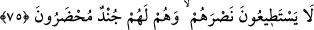
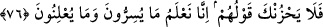

Bu türlü ihsanlara rağmen “Onlar,” başlarına gelen işlerde onlardan “yardım
göreceklerini” veya âhirette kendilerine şefâat edeceklerini “umarak Allah’tan başka”
yâni kudretin tek sâhibi ve nimeti lütfeden Allah’ı bırakıp putlardan “ilâhlar edindiler”
ve ibâdette onları Allah Teâlâ’ya ortak koştular.
75. Halbuki ilâhlarının onlara yardım etmeye güçleri yetmez. Aksine kendileri
bunlar için yardıma hazır askerlerdir.
“Halbuki ilâhlarının onlara yardım etmeye güçleri yetmez. Aksine kendileri” yâni
müşrikler “bunlar” yâni ilâhları “için” cehennemde peşlerinde “yardıma hazır
askerlerdir.” Yâni onlar cehenneme sevk edilirken cehenneme yakıt yapılmak için
onlara eşlik ederler.
Kevâşî der ki: “Rivâyet edilir ki Allah’ın dışında ibâdet edilen her mâbud ve
beraberinde ona tâbi olanlar sanki onun askeri/ordusu gibi getirilir ve cehennemde hazır
edilirler. Bu durum kendisine ibâdeti emreden için veya cansız varlıklara göredir.”
Âbid ve mâbud (putlar) cehennemde olur
Hatta onların hasretleri pek büyük olur
76. (Rasûlüm!) O halde onların sözleri sakın seni üzmesin. Şüphesiz biz, onların
gizlemekte olduklarını da, açığa vurduklarını da biliyoruz.
“(Rasûlüm!) O halde onların sözleri sakın seni üzmesin.” Buradaki “fâ” nehyin
kendisinden öncekinin peşinden geldiğini bildirmek içindir. Yasaklama zâhir
bakımından her ne kadar onların sözlerine yönelik ise de aslında Hz.Peygamber (s.a.)’e
yöneliktir. Allah Teâlâ Hz. Peygamber (s.a.)’i en beliğ/etkili ve kuvvetli bir biçimde
kinâye yoluyla onların sözünden etkilenip üzülmekten nehyetmektedir. Çünkü bir şeyin
sebeplerini ve onun meydana gelmesini sağlayan unsurları yasaklamak, burhânî yolla
bizzat o şeyi yasaklamak ve sebebiyyeti ortadan kaldırmaktır.
Yasaklama müsebbebe yöneltilip sebebin yasaklanmasının murâd edildiği de olur.
Meselâ “Seni burada bir daha asla görmeyeyim.” diyen kişinin muhâtabına yanında
bulunmayı yasaklaması gibi.
“Onların sözleri”nden murad ise zikredildiği üzere onların putları ilâhlar